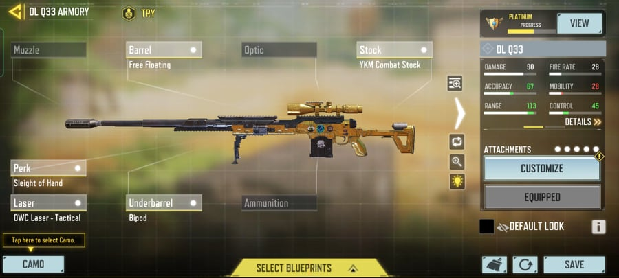

Best attachments for the DL Q33 in COD Mobile Season 6

Considering that the DL Q33 is so well-rounded, the attachments that are chosen don't necessarily have to make up for any given weakness. Rather, they will each reinforce the base stats of the weapon itself.
Best attachments for the DL Q33 in COD Mobile Season 6:
- Barrel: MIP Light
- Underbarrel: Bipod
- Stock: YKM Combat Stock
- Laser: OWC Laser - Tactical
- Perk: Sleight of Hand
The MIP Light barrel for the DL Q33 is perfect for quick ADS and sprint to fire time. It's a necessary attachment for players that want to scope in quick and get fast kills.
For the underbarrel, players should equip the Bipod. This is simply in place to fill the fifth attachment slot without hurting ADS stats, which using a muzzle attachment would typically do.
As for the stock attachment, YKM Combat Stock is the best option for the DL Q33. It adds an additional 10% ADS speed to the sniper rifle, which will add much more speed.